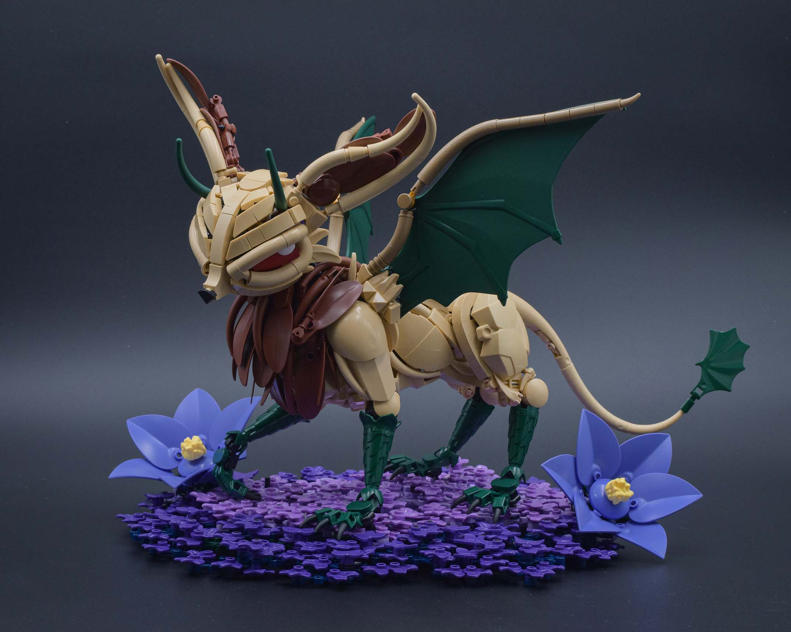
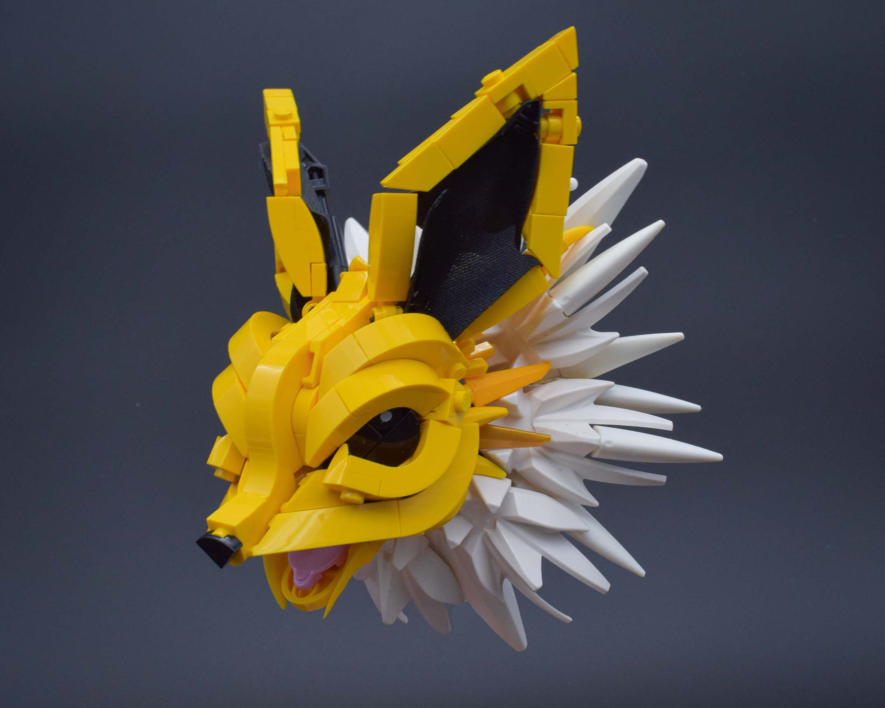
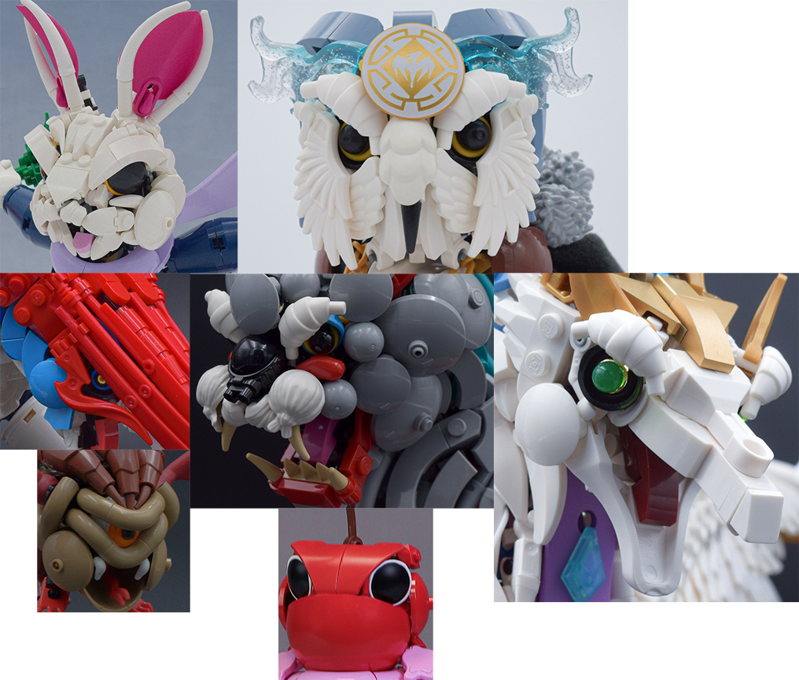
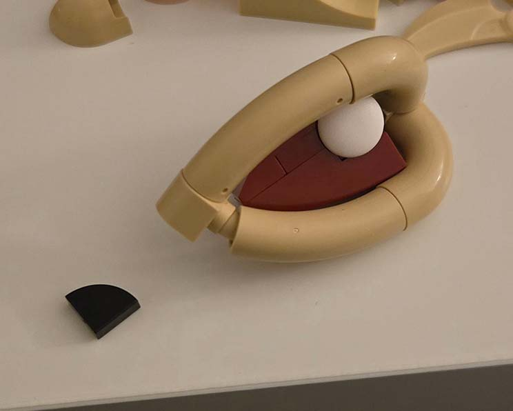
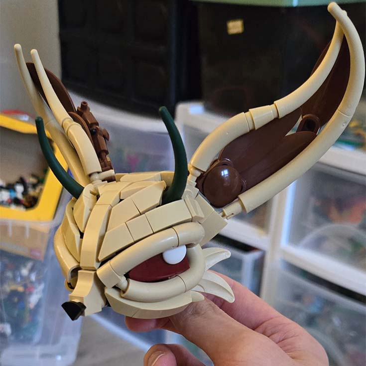
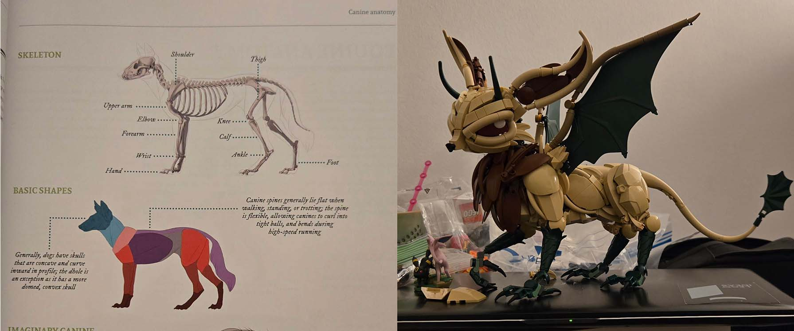
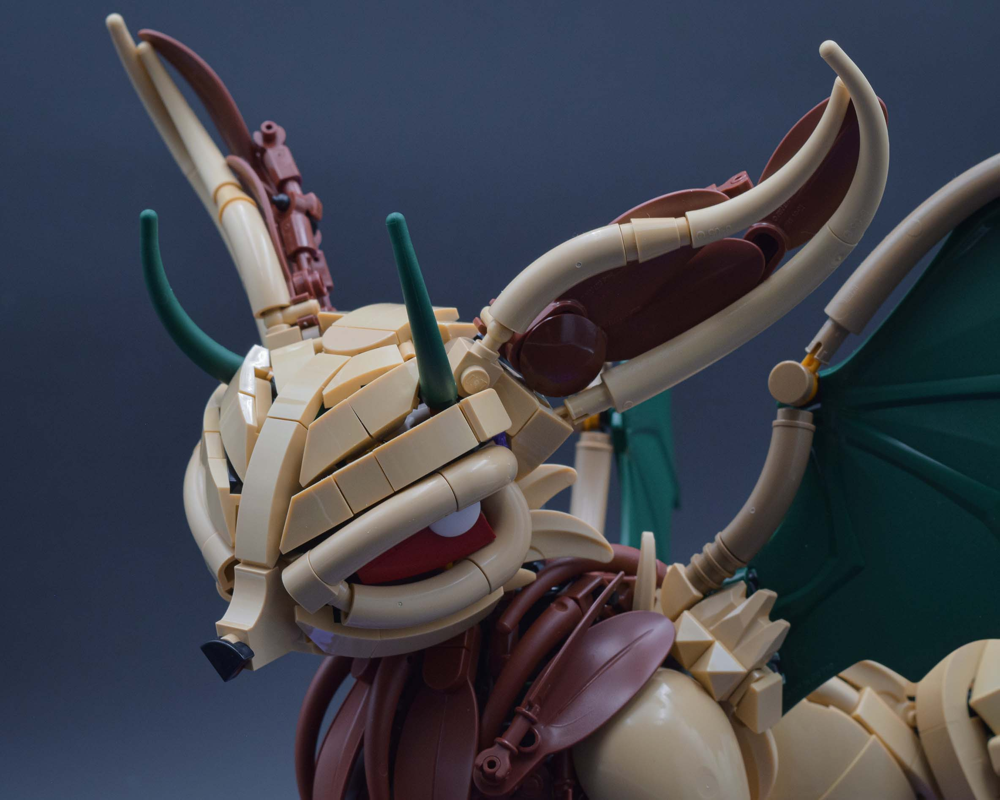
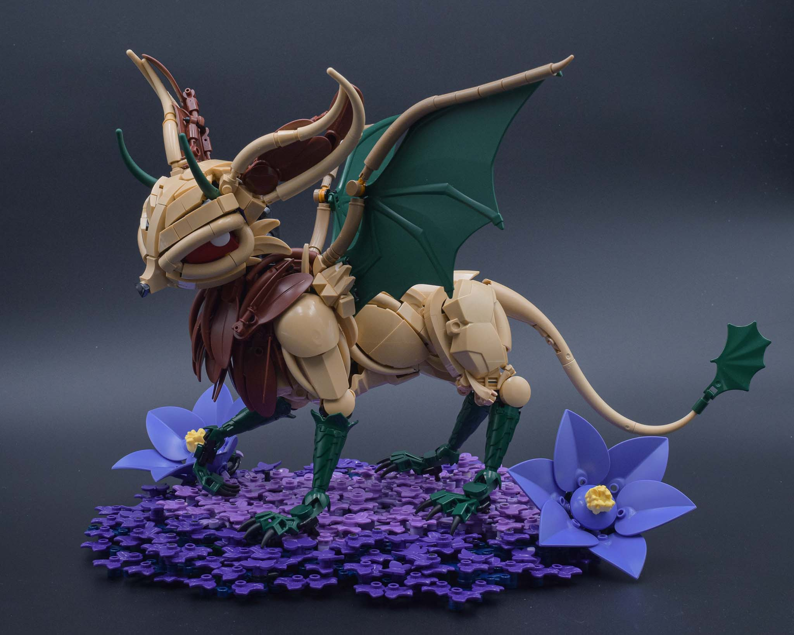

Lilith

Between the new job and moving, it's felt like forever since I've done a proper creature build. Sure I made some creatures last year, but they were either small or felt gimmicky due to the Rogue Olympics part limit. This build was a much needed return to form!
Pokémon Inspo

Before I moved, I had a Jolteon MOC that I was working on. Ultimately, I was unable to finish it; partly due to the move but also part color limitations. Yellow might have been one of the OG colors, but it's still quite lacking for creature building! Anyway, I didn't want what I had to go to waste, especially because I felt like I had finally cracked the Eeveelution head design that fit my style. Thus, the idea to design a creature imitating the Eeveelution design language was born!
"Eyes are the window to the soul."

I like to build eyes. There's so much character that can be expressed from them. After Bio-Cup 2024, I wanted to explore more eye designs beyond the more bar-centric ones I had made for the contest and prior to it. While there isn't anything wrong with those eye designs, they all felt similar in that they were all very circular and the same scale. Varying the shapes and sizes would allow for different expressions and open the gates even wider to different character and creature designs. I think a bit of that exploration is visible in models like Tobu, Cherritoad, and Flyclops.

With this drive to explore a different eye design, I started with the eyelids to form the shape of the eye. Using the new noodle (is it a mac?), I made a pyriform shaping for the eye. I used some system slopes for the iris and a clikits icon for the pupil.
Flow and Design Direction

Looking at Lilith's head, you'll notice that a lot of the assemblies form lines that are parallel and converge toward a central line. I'm sure there's probably some official word for this, but I just call it flow. I think the best way to describe flow is like coloring or painting. You want your lines or strokes to follow a direction rather than just going off in different angles. The same can be done with Lego. It's one thing to get the shaping right with parts, but getting the parts to flow in smooth strokes can help keep the model clean. I'll revisit this idea again in the body design, as there is a bit of crossover between flow and anatomy.
Admittedly, I did not have a clear direction going into this MOC. All I knew was I wanted to make some sort of creature imitating an Eeveelution. The horns were added in because I thought it looked cool. That's it. The choice of dark green helped contrast against the red-toned eyes and ears. Since dark green was an unnatural color for horns, I decided to play it up a bit and make the fantasy/draconic elements of the creature dark green.
Body

The motif of using dark green for the fantasy elements is continued in the body design. While it can be best to lock a single texture to a color, I found having distinct shape language for the different elements (curly with pointed ends for the wings/tail membranes vs angular geometry for the horns and claws) was enough to keep them distinct.

Now back to the flow discussion. I don't think I fully achieved a clean flow for the body, but I was very limited on tan pieces. I wanted the parts to flow in the direction of canine musculature. The main trouble point was the latissimus dorsi muscle, which was difficult replicating due to it's flat yet pyriform shape. I think the shape is close in the model; I just get annoyed at the hard, perpendicular line formed by the quarter slopes.
Purple Enigma
In general, purple is associated with mystery and magic, and I felt that would fit nicely with my fantasy creature and its mysteriously sinister expression. We also got a new color this year: blue violet! It's always fun to see what current colors can synergize with these new shades, and I found creating a gradient of analogous purples to be quite beautiful. The inner layer of medium lavender threeves sits on lavender limb pieces; then, the dark purple threeves sit on dark blue limb pieces (and some dark green ones because I ran out of dark blue but you can't see those hopefully). Lastly, the star of the show, blue-violet, is used for the flowers with a nice bright light yellow center to pop.
Closing Thoughts
Like I said at the beginning, it's been too long since I've built a proper creature. I actually felt rusty when trying to work my way through some connections.
It was quite interesting and difficult to work in an uncommon base color for a constraction creature. The amount of recent parts in the past year or two has really expanded the opportunity to branch out into these strange colors. I feel like the noodle in particular has really level-upped organic building, and I definitely will be getting some more to experiment with.
Not sure if this MOC is my favorite, but it's certainly up there. I feel like this is a bit of a spiritiual successor to my ice fox from 2021; though part of me wants to remake that at some point... maybe if I find the time and motivation this year.

